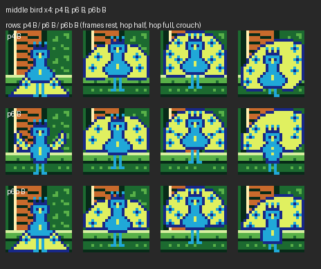
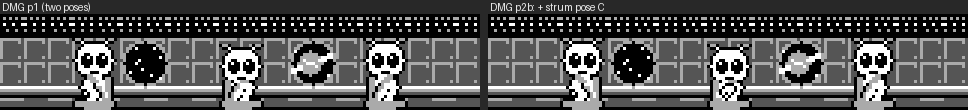
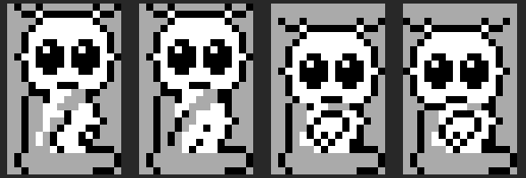
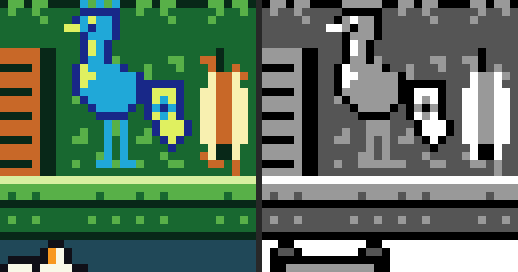
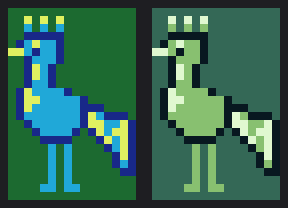
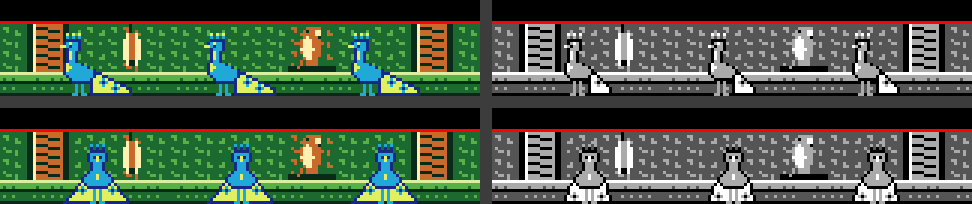

Open questions
Every question waiting on your answer, with its pictures. Answered questions come off this list. Reply in chat with the number, e.g. "Q12: shared".
3 open · updated 2026-11-03
Q31
Peacock lineup, even loop
Is the peacock lineup ready to lock now?
- Middle peacock now goes up, down, up, down; the crouch is one of the downs
- Same art as before; Color only (the DMG middle bird already went up, down)
- Side peacocks unchanged
- Color top, DMG below; then the middle bird: first one, last pass, now


Q32
Middle peacock bounce
Which bounce should the middle peacock use: A, the pass 4 bounce, or B, the current even bounce? Answer A or B.
- A: pass 4 order, 4 beats: rest, half, full, crouch; it drops from the top straight into the crouch every time
- B: 8 beats: rest, half, full, half, crouch, half, full, half; it passes back through half on the way down, and crouches every other bounce
- Same art either way; Color only
A
B
Q33
Space band on the DMG, new strumming hand
Does the new strumming hand read as a hand to you, or should we try a different idea? Answer keep or retry.
- New hand pose on every head dip: white, high on the harp strings; the old low hand on the other beats
- My read: at full size it looks more like a badge on the chest than a hand
- DMG only; left the band before, right new


View
Peacock versions
Pass 1

Pass 2

Pass 2 full

Pass 3

Pass 4

Pass 5

Pass 6

Pass 6b
Now

View
Robot lineup
Disco · groove · disco; Color over DMG

Before and now
Saloon dancer

Cheerleader